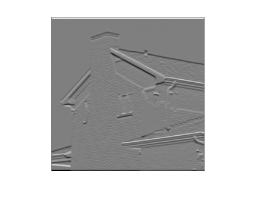
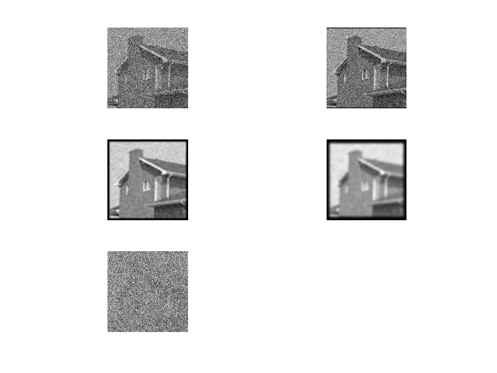

Contents
close all clear clc %%Step 1 h1 = [1 2 1]; h2 = [1 0 -1]; h3 = conv(h1,h2); h4 = conv(h1,h3,'full'); h3l = h3'; hA = h1'*h1; hB = h2'*h1; hC = h3'*h3; hD = h4'*h4; hL = fspecial('laplacian',0.0); A1 = zeros(16); A1(5:11,5:11) = ones(7); figure() mesh(A1); title('A1') AA = conv2(hA,A1); AB = conv2(hB,A1); ABB = conv2(hB',A1); AC = conv2(hC,A1); AD = conv2(hD,A1); AL = conv2(hL,A1); figure(); mesh(AA); title('AA = conv2(hA,A1);') figure(); mesh(AB); title('AB = conv2(hB,A1);') figure(); mesh(ABB); title('ABB = conv2(hB'',A1);'); figure(); mesh(AC); title('AC = conv2(hC,A1);') figure(); mesh(AD); title('AD = conv2(hD,A1);') figure(); mesh(AL); title('AL = conv2(hL,A1);') % Checkpoint 1: Show your results to your lab assistant and discuss questions. % Step 1 % hA, hB, hC:hA = h1'*h1;hB = h2'*h1;hC = h3'*h3; % What is the size of A1? 16 x 16 double array % Describe the effect of the filters on the input array. % Depending on the values in the matrix, the input arrays magnitude gets % shifted to reflect the matrix that it is convoluted with % Verify that using hB for the filter produces the same result as using the column and row vectors h2’ and % h1 for the filter definition with conv2(h2’,h1,A1). % Verified as seen in the graph in the report. % What is the size of the output arrays? % h3’ and h3:5x1 array 1x5 array respectively % Describe the effect of this filter on the input array % h4: % The effect of the filter is that as the array [1 4 5 0 -5 -4 -1] gets % convoluted against itself and then is convoluted against a1 the magnitude % of the input array reflects the values of the convoluted values. % Compare this result to the previous result using h3. % Laplacian: % What is the size of this filter? % 3x3 array % Write the filter values of the 2D filter array. % [0,1,0;1,-4,1;0,1,0] % Convolve this filter with A1 and display it with mesh. How is this result different from filtering with hB or % hB’? % This result is different because it doesnt just take into acount the % horizontal or vertical edges and outlines the figure itself.
Step 2
i1 = imread('4.1.05.tiff'); figure(); imshow(i1); i1grey = rgb2gray(i1); s3 = h3/16; i1_s3 = conv2(s3',s3,i1grey); figure(); imshow(i1_s3); hs = ones(2,40)/80; ilg_hs = conv2(hs, i1grey); figure(); imshow(ilg_hs,[]); hm = fspecial('motion',41,30); ilg_hm = conv2(hm,i1grey); figure(); imshow(ilg_hm,[]); %{ Checkpoint 2: Show your results to your lab assistant and discuss questions. Step 2 scaled smoothing filter s3 = h3/16:260x260 double Compare this display to the input image. Identify some areas in this smoothed image that have less sharp detail than the input image. the new image is sharper on edges however there are locations such as the door and the gutter as well as the windows that are smoother because there wasn't as much of a contrast as before 2D smoothing filter with different smoothing in the horizontal and vertical directions with hS = ones(2,40)/80. Use full range display What is the effect of this filter?257x295 double This filter just the horizontal outlines to smooth the edges motion blur filter: use full range display What is the size of this filter? 276x292 double Convolve this filter with i1grey and display it. What is the effect of this filter? How does it compare to the previous output image? This filter blurs the horizontal and vertical to smooth the edges %}
Step 3
i1g_hb = conv2(hB ,i1grey); i1g_hbt = conv2(hB',i1grey); figure(); imshow(i1g_hb); figure(); imshow(i1g_hbt); figure(); imshow(i1g_hb,[]); figure(); imshow(i1g_hbt,[]); i1g_h1 = conv2(h1,i1grey); figure(); imshow(i1g_h1,[]); edge1 = edge(i1grey); imshow(edge1); i2 = imread('eight.tif'); i2_hB = conv2(hB, i2); i2_hBt = conv2(hB',i2); figure(); imshow(i2_hB); figure(); imshow(i2_hBt); figure(); imshow(i2_hB,[]); figure(); imshow(i2_hBt); figure(); imshow(i2_hBt, []); i2_h1 = conv2(h1,i2); figure(); imshow(i2_h1,[]); edge2 = edge(i2); imshow(edge2); %{ Step 3 Full range display: Redisplay the two images with imshow(imout, []) and compare the two displays. Which one emphasizes vertical edges? i1g_hb = conv2(hB ,i1grey) emphasizes vertical edges. Which one emphasizes horizontal edges? i1g_hbt = conv2(hB' ,i1grey) emphasizes horizontal edges. Is this consistent with the output you observed in Step 1 using the 2D array A1 as the input? Yes. Edge filter: How are the displayed edge segments related to the filtered outputs using hB and hB’? The displayed edge segments are shown as modified edges that can be interpreted as post-filter processing. Whatever the filter processing may be hB emphasizing vertical edges and hB’ emphasizing horizontal edges. %}
Step 4
inoise = 128*rand(80) + 128; hg1 = fspecial('gaussian',5 ,0.5); hg2 = fspecial('gaussian',15,2.0); hg3 = fspecial('gaussian',25,4.0); ihg1 = conv2(hg1,inoise); ihg2 = conv2(hg2,inoise); ihg3 = conv2(hg3,inoise); figure() subplot(2,2,1); imshow(inoise,[]) subplot(2,2,2); imshow(ihg1,[]) subplot(2,2,3); imshow(ihg2,[]) subplot(2,2,4); imshow(ihg3,[]) hL2 = [0,-1,0 ; -1,5,-1 ; 0,-1,0]; for V = [0 20 40] i1noise = double(i1grey) + V*randn(size(i1grey)); ihg1 = conv2(hg1,i1noise); ihg2 = conv2(hg2,i1noise); ihg3 = conv2(hg3,i1noise); ihL2 = conv2(hL2,i1noise); figure() subplot(3,2,1); imshow(i1noise,[]) subplot(3,2,2); imshow(ihg1,[]) subplot(3,2,3); imshow(ihg2,[]) subplot(3,2,4); imshow(ihg3,[]) subplot(3,2,5); imshow(ihL2,[]); end %{ Step 4 Gaussian smoothing filters of different sizes: Describe the appearance of the images. As we increase in value of the smoothing filters, the noise is reduced in our final image. The outlines of our image also gets increasingly bolder as well. What is the effect of the smoothing on the random noise patterns? The effect of the smoothing on the random noise patterns feels like it generalizes the picture more regardless of the added noise. Add noise to i1grey and determine the best smoothing filter to reduce the impact of the noise: When the noise level V is 0, what is the effect of each of the three Gaussian filters? The effect of the three gaussian filters is standard in comparison to the expected effect that we see in the first figure. How well defined are the edges and corners in the sharpened output? The edges and the corners are well defined in comparison to the other duller regions. For the two other values of V, what amount of smoothing do you think makes the best output image and why did you choose that level? 20 bedcause 40 intoduces a lot more noise. What happens to the sharpened output when there is noise in the image? The sharpened output is realtively the same. for the hL filter but definitely noisier and messier for the hg1,2,3 filters. %}